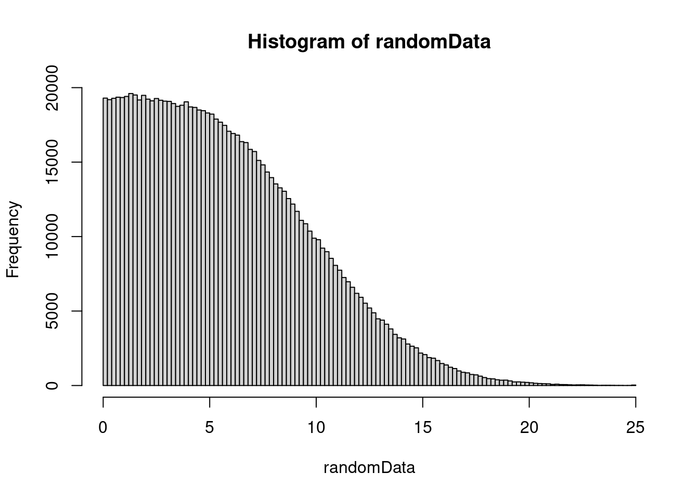
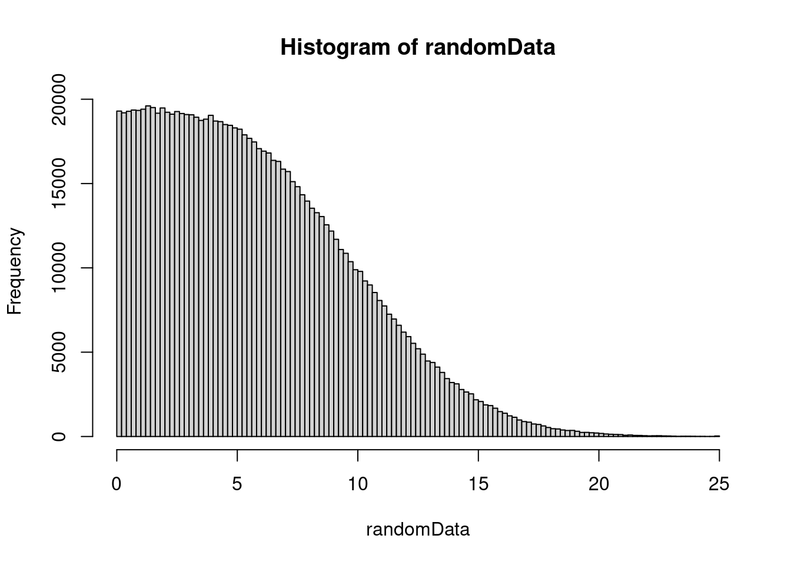
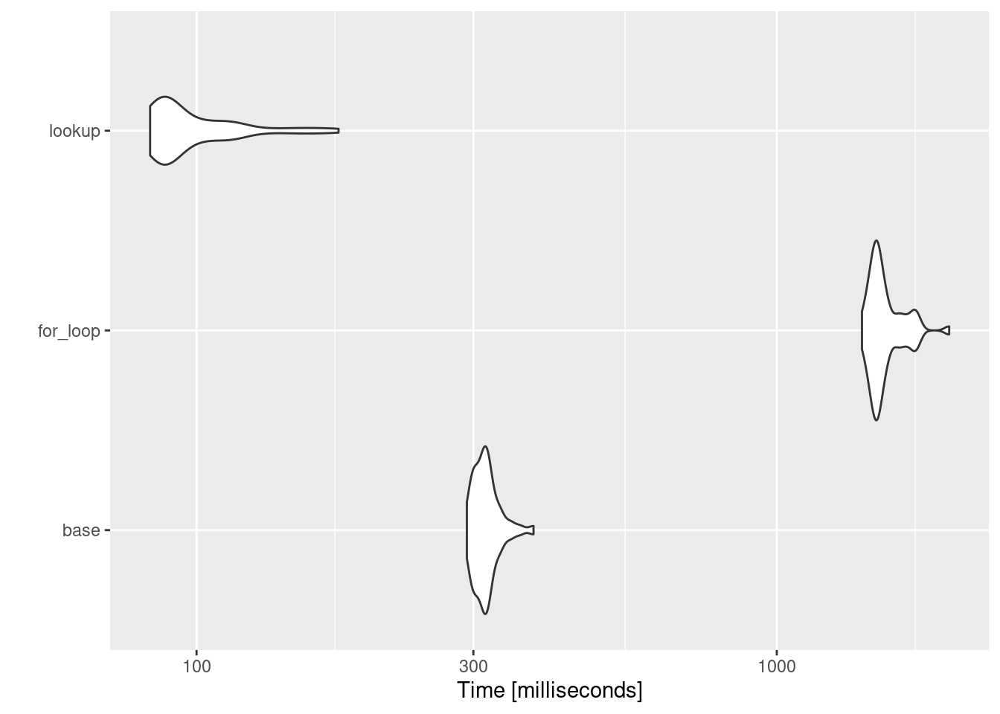
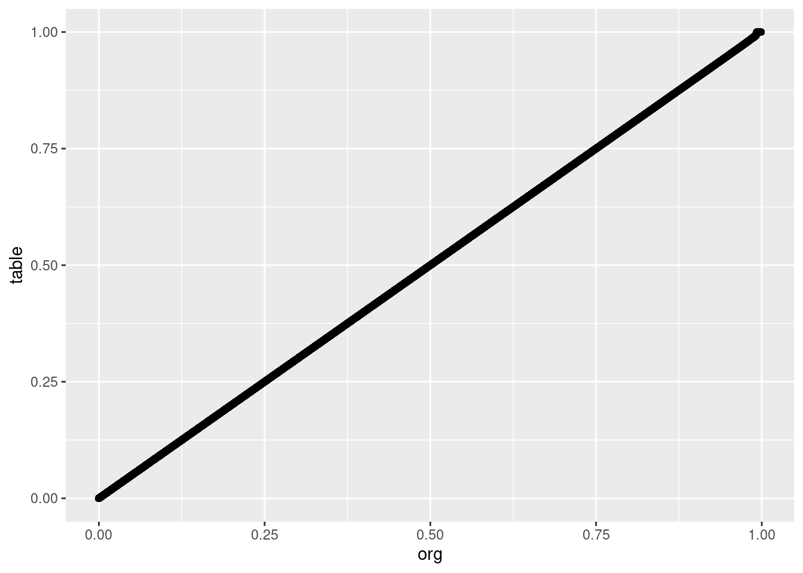
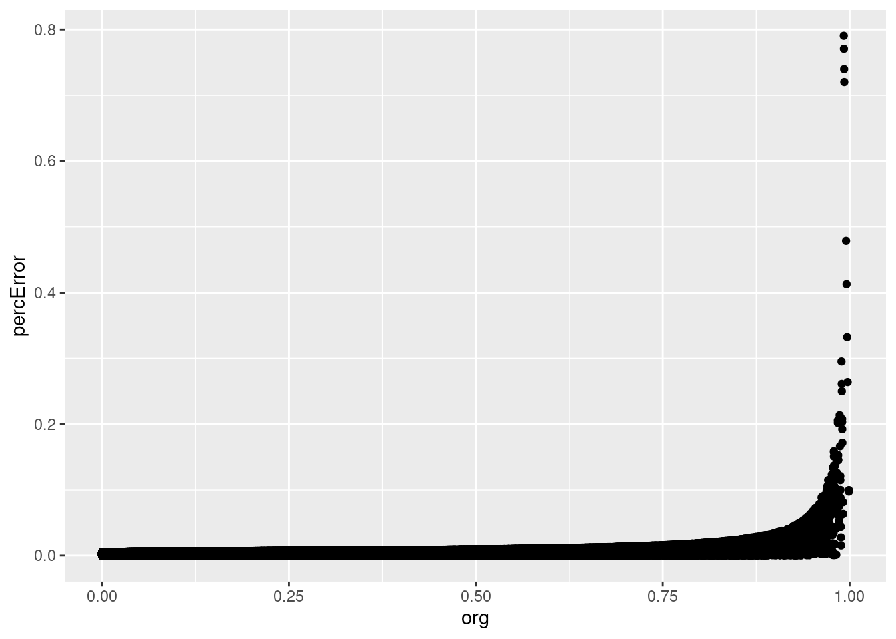

nPoint <- 1000000
randomData <- abs(rnorm(nPoint, mean=5, sd=5)) # take absolute so we have only positive values
randomData[randomData > 25] <- 25
hist(randomData, 100)
Demonstrating a way to generate a large amount of numbers that otherwise might take a long time to calculate.
Robert M Flight ![]()
October 17, 2013
I’m currently working on a project where we want to know, based on a euclidian distance measure, what is the probability that the value is a match to the another value. i.e. given an actual value, and a theoretical value from calculation, what is the probability that they are the same? This can be calculated using a chi-square distribution with one degree-of-freedom, easily enough by considering how much of the chi-cdf we are taking up.
The catch is, we want to do this a whole lot of times, in c++. We could use the boost library to calculate the chi-square each time we need it. Or we could generate a lookup table that is able to find the p-value simply based on the distance. This is especially attractive if we have a limit past which we consider the probability of a match as being zero, and if we use enough decimal points that we don’t suffer too much in precision.
Although our goal is to implement this in c++, I also want to prototype, demonstrate and evaluate the approach in R.
We are going to consider 25 (5 standard deviations squared) as our cutoff for saying the probability is zero. So to make sure we are doing all calculations using the exact same thing, we will pre-generate the values for testing on real data, in this case a set of 1000000 random numbers from zero to 25.
nPoint <- 1000000
randomData <- abs(rnorm(nPoint, mean=5, sd=5)) # take absolute so we have only positive values
randomData[randomData > 25] <- 25
hist(randomData, 100)
We will have three ways to do this in R:
pchisq functionfor loopI’m going to create these all as functions, and then time each one using microbenchmark.
pchisq_baser <- function(randomData) {
1 - pchisq(randomData, 1)
}
pchisq_for <- function(randomData){
naiveRes <- numeric(length(randomData))
for (iP in 1:length(randomData)) {
naiveRes[iP] <- 1 - pchisq(randomData[iP], 1)
}
naiveRes
}
# creating the lookup table
nDivision <- 10000
dof <- 1
nSD <- 25
nElements <- nSD * nDivision
chiVals <- seq(0, nElements, 1) / nDivision
pTable <- 1 - pchisq(chiVals, 1)
pchisq_lookup <- function(randomData, lookupTable, nDivision){
tableRes = numeric(length(randomData))
for (iP in 1:length(randomData)) {
tableRes[iP] <- lookupTable[(randomData[iP] * nDivision) + 1]
}
tableRes
}
base_res = pchisq_baser(randomData)
lookup_res = pchisq_lookup(randomData, pTable, nDivision)How long do each of these take?
Coordinate system already present. Adding new coordinate system, which will
replace the existing one.
What about any loss in precision of the values returned?
lookupRawPrecision <- abs(lookup_res - base_res) / base_res * 100
precTable <- data.frame(org = base_res, table = lookup_res, percError = lookupRawPrecision)
ggplot(precTable, aes(x=org, y=table)) + geom_point()

So, according to this, we are only introducing error at 0.7905138%, which isn’t much. And the values look like the are well correlated, so we should be good.
Now, how do these approaches compare when using c++?
So it’s a fair comparison, the code below actually writes the c++ program we are going to use, with the random numbers for the p-value calculation stored as part of the code file.
A couple of notes:
float variables, so that there is no difference in each for memory allocation.cppRaw <- c('#include <iostream>',
'#include <boost/math/distributions/chi_squared.hpp>',
'int nVal = 1000000;',
'double dof = 1.0;',
'int i;',
paste('float randVals[1000000] = {', paste(as.character(randomData), sep="", collapse=", "), '};', sep="", collapse=""),
paste('float pTable[250001] = {', paste(as.character(pTable), sep="", collapse=", "), '};', sep="", collapse=""),
'int main() {',
'using boost::math::chi_squared_distribution;',
'chi_squared_distribution<> myChi(dof);',
'for (i = 0; i < nVal; i++){',
'1 - cdf(myChi, randVals[i]);',
'};',
'return(0);',
'};')
cat(cppRaw, sep="\n", file="cppRaw.cpp")
system2(command = "g++", args = "cppRaw.cpp -o cppRaw.out")
system2(command = "time", args = "./cppRaw.out", stderr = "raw_results.txt")
readLines("raw_results.txt", n = 1)[1] "0.45user 0.00system 0:00.45elapsed 100%CPU (0avgtext+0avgdata 7604maxresident)k"cppLookup <- c('#include <iostream>',
'#include <boost/math/distributions/chi_squared.hpp>',
'int nVal = 1000000;',
'double dof = 1.0;',
'int i;',
paste('float randVals[1000000] = {', paste(as.character(randomData), sep="", collapse=", "), '};', sep="", collapse=""),
paste('float pTable[250001] = {', paste(as.character(pTable), sep="", collapse=", "), '};', sep="", collapse=""),
'int main() {',
'using boost::math::chi_squared_distribution;',
'chi_squared_distribution<> myChi(dof);',
'for (i = 0; i < nVal; i++){',
'pTable[(int(randVals[i] * nVal))];',
'};',
'return(0);',
'};')
cat(cppLookup, sep="\n", file="cppLookup.cpp")
system2("g++", args = "cppLookup.cpp -o cppLookup.out")
system2("time", args = "./cppLookup.out", stderr = "lookup_results.txt")
readLines("lookup_results.txt", n = 1)[1] "0.00user 0.00system 0:00.00elapsed 100%CPU (0avgtext+0avgdata 3528maxresident)k"So bypassing boost in this case is a good thing, we get some extra speed, and reduce a dependency. We have to generate the lookup table first, but the cpp file can be generated once, with a static variable in a class that is initialized to the lookup values. We do have some error, but in our case we can live with it, as the relative rankings should still be pretty good.
Edit 2022-12-02: When I originally did this, the lookup R version was in between the for loop and the base R equivalent, and now it seems the lookup version is actually faster, by a bunch, actually. Or I was blinding myself because I wasn’t using microbenchmark?
@online{mflight2013,
author = {Robert M Flight},
title = {Pre-Calculating {Large} {Tables} of {Values}},
date = {2013-10-17},
url = {https://rmflight.github.io/posts/2013-10-17-pre-calculating-large-tables-of-values},
langid = {en}
}